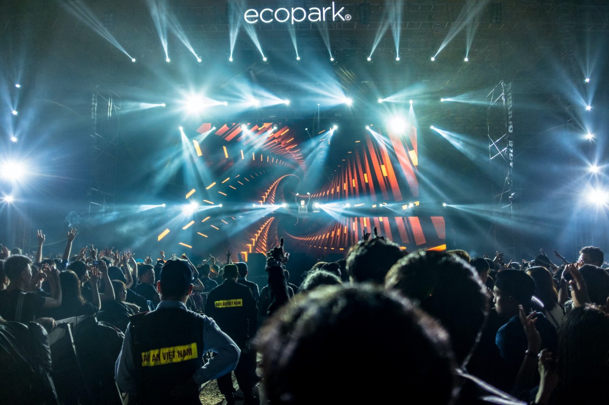

My name is Hailey Smith. I am a Communications Major and a Minor is Business. I recently transferred to the University of Rhode Island after spending teo years studying at the Community College of Rhode Island. Even though Programming in unrelated to either of my my studies, I have always been intrigued by the process of programming and believe is is a beneficial skill to have in modern day.
I enjoy going to music festivals in my free time and trying out new restaurants. I have been to about ten festivals in the past two years in New York, Ohio, Orlando, Las Vegas, Philladelphia, etc. The music preformed falls in the category of EDM. This stands for electric dance music.
One of my favorite places to get a bite to eat would be Opa restaurant in Providence, Rhode Island. I love middle eastern cuisines and the entertainment there is lively. It is perfect for a night on the town if you are looking for flavorful food, hookah, great drinks, and lively entertainment.
.